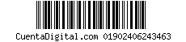

Garupá, Misiones, 25 de Mayo de 2013
Por la presente, se notifica que se ha labrado acta de Infracción Nº
S000001 que da inicio a las actuaciones contravencionales ante el Tribunal Administrativo de Faltas de
la Ciudad de Garupá, cito en Av. Las Américas Nº 3217. Por ello se lo CITA, EMPLAZA Y NOTIFICA para
comparecer, dentro del plazo máximo de diez (10) días corridos, contados desde la notificación de la
presente, a formular descargo y ofrecer las pruebas que tuviere y que estime convenientes, con relación
a la infracción que se le imputa, munido de Documento Nacional de Identidad y Licencia de Conducir
habilitante, en su caso, y el DUPLICADO de la presente acta de infracción, pudiendo ser asistido por un
letrado. En caso de residir a una distancia mayor a 60 Kilómetros del asiento del Juez competente que
corresponde a la jurisdicción del lugar de comisión de la presunta infracción, podrá optar por
comparecer personalmente ante el juez, ejercer su defensa por escrito, o prorrogar la competencia ante
el juez competente de su domicilio. En caso de que el imputado se encuentre domiciliado en otra
provincia, solo procederá la prórroga, cuando la jurisdicción a la que pertenezca el juez del domicilio
se encuentre adherida a la Ley Nacional de Tránsito y exista un convenio de reciprocidad.-
ACTA DE INFRACCIN DE TRANSITO Nº S000001
| Apellido y Nombre: |
DNI/CUIT: |
Infracción Imputada: |
| Rios Luis Antonio |
28.456.325 |
Semaforo Luz Roja |
| Domicilio: |
Lugar: |
| Misiones 100 |
Semaforo 1 Ao 15 Ruta prov. 2 Km 6 |
| Localidad: |
Cód. Postal |
Fecha: |
Hora: |
Dominio: |
| Posadas |
3256 |
25/05/2013 |
13:21:12 |
AXC274 |
| Provincia |
Marca: |
Modelo: |
| Misiones |
FIAT |
Palio LTD 1.9 |
Disposición legal infringida: Ley Nacional de Tránsito N°24.449, Mod. Y Reg. Vigente CC.
Monto mínimo de la infracción: 300 U.F. - valor U.F. : $ 7,289 - Importe: $ 2.186,70
Nota: Serán solo válidos los descargos recibidos personalmente, desde juzgado competente o
mediante carta certificada acompañado de copia de la presente, fotocopia de DNI y declaración
y/o prueba correspondiente al descargo en cuestión.-
QUEDA UD. DEBIDAMENTE NOTIFICAD.-
PAGO VOLUNTARIO CON DESCUENTO DEL CINCUENTA POR CIENTO (50%) PRIMER VENCIMIENTO
Código de Barras valido únicamente para: Pago Fácil, Rapi-Pago, Cobro Express, RIPSA Pagos, Provincia Pagos.-
|
Primer Vencimiento
|
Segundo Vencimiento
|
|
30/06/2013
|
15/07/2013
|
|
$ 1093.35
|
$ 1123.35
|
